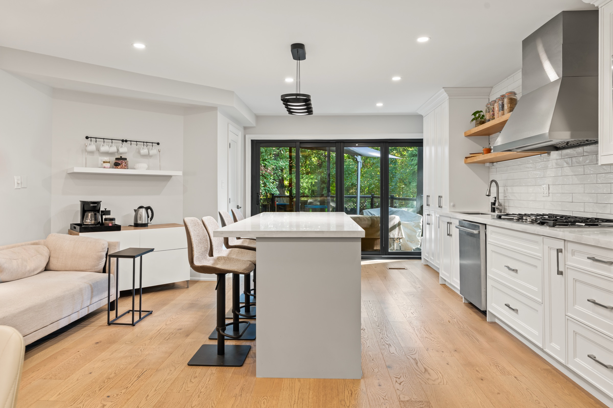
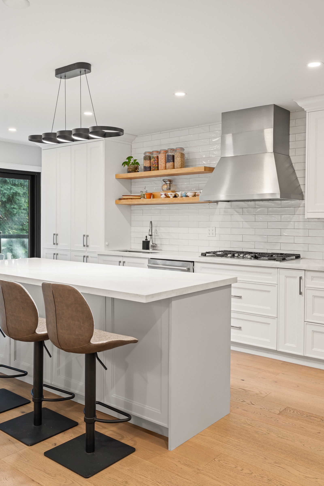
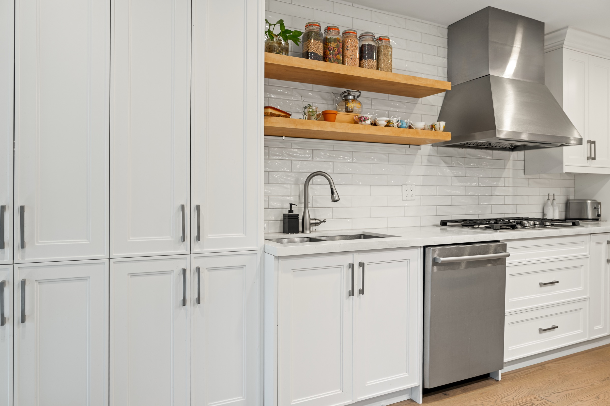

Begin with how the room should change.
We look at who uses the kitchen, where the friction sits, how people move, what needs a permanent place on the counter, and how the room connects to the rest of the home.
Custom Kitchens · Toronto & GTA
Mariani turns the room, routines, architecture, storage, appliances, and visual direction into one kitchen plan—then carries it through custom cabinetry and installation.
Discuss the room
A custom kitchen is worth the investment when it solves the room: people can move, storage is where it is used, materials belong in the home, and every door and appliance can open without conflict.
We look at who uses the kitchen, where the friction sits, how people move, what needs a permanent place on the counter, and how the room connects to the rest of the home.
Layout, cabinetry, interiors, appliances, surfaces, lighting, and the adjoining room are considered together instead of chosen as separate products.
Custom production, site conditions, installation, and connected renovation remain tied to the same room plan through the Capable operation behind Mariani.


Begin without a finished specification
The first conversation is for understanding the home and deciding what should change. Materials and technical choices come after the room has a useful direction.